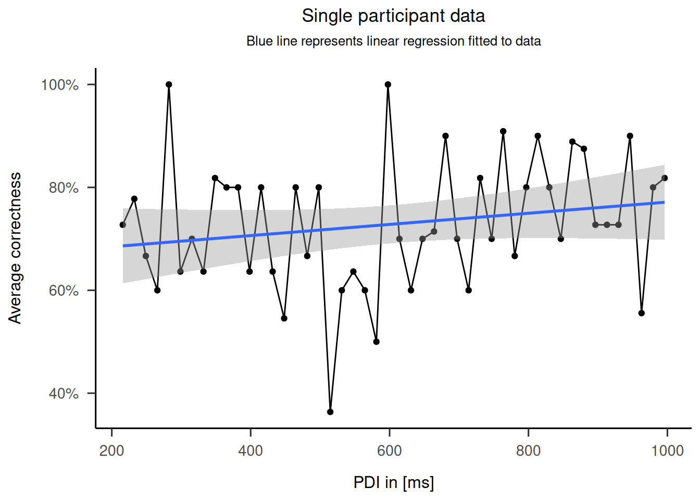
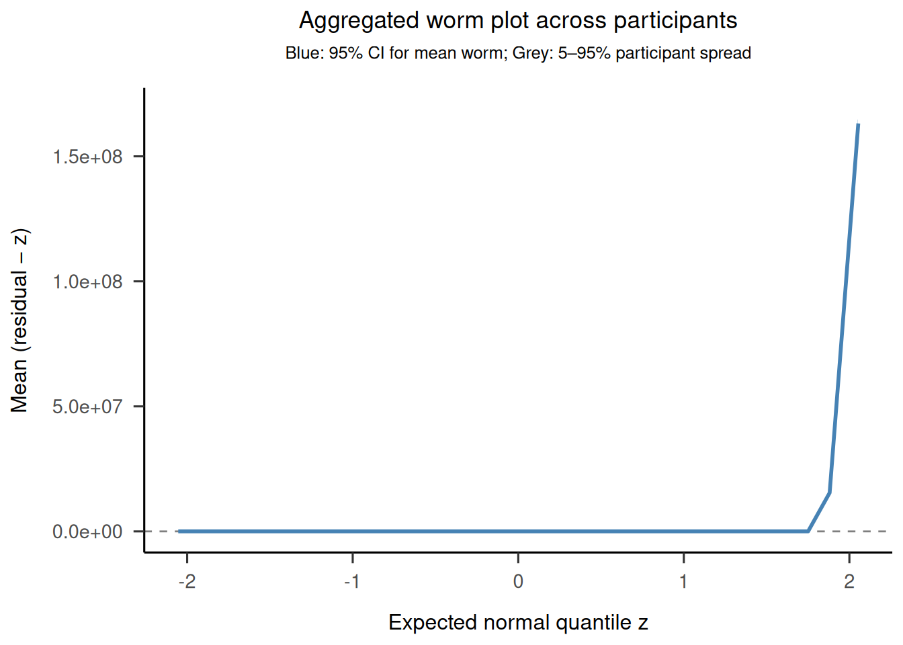
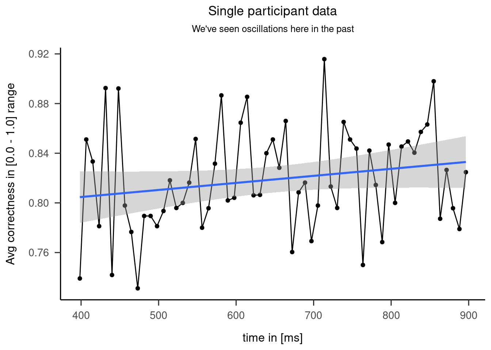
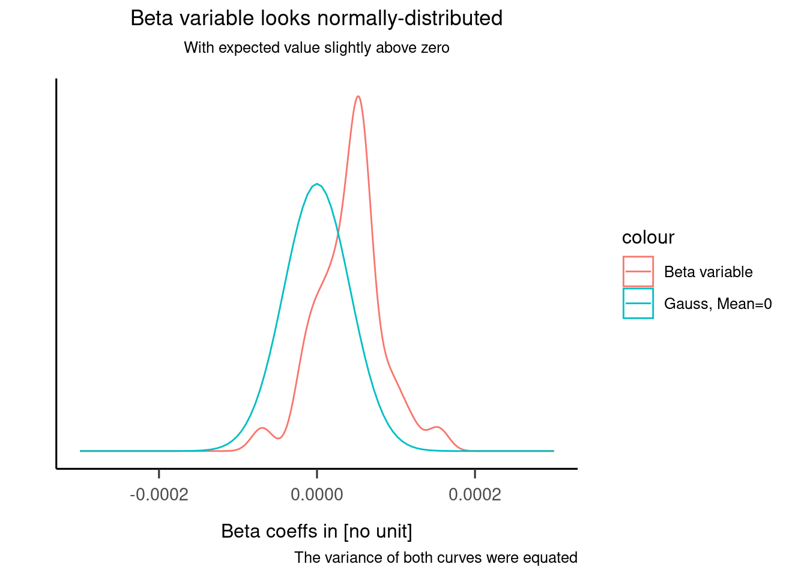

Trend Analysis
Does varying cue-stimulus interval affect the sensory discrimination performance in the antisaccade task?
DATA A
150 participants, CSI range 216-1000 with 16.(6) ms step
We fit a regression line for each of the participants. We then create a variable from the beta slope coefficients. Further analyzes are performed on the newly created variable.
Warning: Removed 2 rows containing non-finite values (`stat_density()`).
print(tA.shapiro.350)
Shapiro-Wilk normality test
data: betas.A.350$beta
W = 0.98023, p-value = 0.03336print(tA.t.350)
One Sample t-test
data: betas.A.350$beta
t = 5.0405, df = 145, p-value = 1.364e-06
alternative hypothesis: true mean is not equal to 0
95 percent confidence interval:
2.782842e-05 6.373001e-05
sample estimates:
mean of x
4.577922e-05 Conclusion
The Shapiro-Wilk test was performed on the betas variable and did not show evidence of non-normality (\(W = 0.99\), \(p = .852\)). Based on this outcome, and after visual examination of the density plot of betas and the QQ plot, we decided to use a parametric one-sample t-test that compares beta variable mean with the zero. The t-test showed that while the alternative hypothesis that the true mean is not 0 is true, the effect size is so small that it is rounded to zero (\(M = 0.00\), 95% CI \([0.00, 0.00]\), \(t(145) = 8.89\), \(p < .001\)).
Data B


print(tB.shapiro)
Shapiro-Wilk normality test
data: betas.B$beta
W = 0.97195, p-value = 0.4813print(tB.t)
One Sample t-test
data: betas.B$beta
t = 5.9302, df = 35, p-value = 9.542e-07
alternative hypothesis: true mean is not equal to 0
95 percent confidence interval:
2.728226e-05 5.568472e-05
sample estimates:
mean of x
4.148349e-05